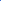

<!DOCTYPE html>
<html lang="en">
<head>
  <meta charset="UTF-8">
  <meta http-equiv="X-UA-Compatible" content="IE=edge">
  <meta name="viewport" content="width=device-width, initial-scale=1.0">
  <title>图片放大镜</title>
  <style>
    .body {
      margin: 0;
      padding: 0;
    }
    .container {
      margin: 40px 100px;
      position: relative;
    }
    .main img {
      width: 100%;
      height: 100%;
    }
    .main {
      width: 400px;
      height: 400px;

      position: relative;
    }
    .left {
      width: 100%;
      height: 100%;

      border: 1px solid #eee;
      position: absolute;
      top: 0;
      left: 0;
    }
    .left img {
      position: absolute;
      top: 0;
      left: 0;
      z-index: 100;
    }
    .left-bg {
      position: absolute;
      left: 0;
      right: 0;
      z-index: 200;

      width: 100px;
      height: 100px;
      background-color: #eee;
    }

    .right {
      width: 100%;
      height: 100%;
      position: absolute;

      top: 0;
      left: 420px;

      border: 1px solid #cdc;
      opacity: 0;
      /* background: url('./images/imgA_3.jpg') no-repeat; */
    }


    .thumbs {
      margin-top: 10px;

      width: 400px;
      display: flex;
      justify-content: center;
    }
    .thumbs img {
      display: block;
      margin: 0 2px;

      width: 64px;
      height: 64px;

      border: 2px solid #fff;
    }
    .thumbs img:hover {
      cursor: pointer;
    }
    .thumbs img.selected {
      cursor: pointer;
      border: 2px solid rgb(63, 63, 63);
    }
  </style>
</head>
<body>
<!--
1. 鼠标始终在放大镜的中心点
2. 当向左边移动时，
-->
  <div class="container">
    <div class="main">
      <div class="left">
        
        <div class="left-bg">
          <!--  -->
        </div>
      </div>
      <div class="right"></div>
    </div>

    <div class="thumbs">
    </div>
  </div>
</body>
</html>
<script src="../index.js"></script>
<script>
(function() {
  // 放大镜图片宽高
  var magnifyingGlassDiv = $('div.left-bg')
  var magnifyingGlassWidth = magnifyingGlassDiv.clientWidth
  var magnifyingGlassHeight = magnifyingGlassDiv.clientHeight
  console.log(magnifyingGlassWidth, magnifyingGlassHeight)

  // 主图宽高
  var mainImageDiv = $('div.left')
  var mainImageWidth = mainImageDiv.clientWidth
  var mainImageHeight = mainImageDiv.clientHeight

  // 高清图层宽高
  var highDefinitionDiv = $('div.right')
  var highDefinitionDivWidth = 400
  var highDefinitionImageWidth = 800

  const Thumb = 1
  const Main = 2
  const HighDefinition = 3

  // A, B, C
  function buildImageName(char, n) {
    return `./images/img${char}_${n}.jpg`
  }

  var images = []
  for (let i = 0; i < 3; i++) {
    var char = String.fromCharCode(65 + i)
    images.push({
      thumb: buildImageName(char, 1),
      main: buildImageName(char, 2),
      high: buildImageName(char, 3),
    })
  }

  // 初始化缩略图
  function initThumbs() {
    var thumbsDiv = $('div.thumbs')
    images.forEach((item, index) => {
      var thumb = document.createElement('img')
      thumb.src = item.thumb
      thumb.setAttribute('index', index)
      thumbsDiv.append(thumb)
    })
  }

  // 选中缩略图
  // 注：也可以通过event.target获取触发的对象。
  var currentIndex = 0
  function selectedImage(index) {
    var thumbs = [].slice.call($$('div.thumbs img'))

    thumbs[currentIndex].className = ''
    thumbs[index].className = 'selected'

    mainImageDiv.children[0].src = images[index].main
    
    highDefinitionDiv.style.background = 'url("' + images[index].high + '") no-repeat'
    console.log('url("' + images[index].high + '") no-repeat')

    currentIndex = index
  }

  // 初始化主图
  function init() {
    initThumbs()
    selectedImage(0)
    
    // 绑定缩略图事件
    var thumbs = [].slice.call($$('div.thumbs img'))
    for (let i = 0; i < thumbs.length; i++) {
      const element = thumbs[i]
      element.onclick = function() {
        selectedImage(i)
      }
    }
    


    // 算出背景图片偏移的系数
    var rate = (highDefinitionImageWidth - highDefinitionDivWidth) / (mainImageWidth - magnifyingGlassWidth)
    console.log(rate)

    var offsetLeft = $('div.container').offsetLeft
    var offsetTop = $('div.container').offsetTop

    // 放大镜功能实现
    function magnifyingGlass(event) {
      // errpr: 由于我们是在放大镜图层触发了事件，因此event事件是相对于放大镜图层的，所以计算出来的数值就不正确。
      // var leftSpacing = event.offsetLeft - (bgWidth/2)

      highDefinitionDiv.style.opacity = 1

      // clientX, clientY: 鼠标相对于浏览器窗口的距离
      var leftSpacing = event.clientX - offsetLeft - (magnifyingGlassWidth/2)
      var topSpacing = event.clientY - offsetTop - (magnifyingGlassHeight/2)

      if (leftSpacing <= 0) {
        leftSpacing = 0
      }

      if (leftSpacing >= (mainImageWidth - magnifyingGlassWidth)) {
        leftSpacing = mainImageWidth - magnifyingGlassWidth
      }

      if (topSpacing <= 0) {
        topSpacing = 0
      }
      if (topSpacing >= (mainImageHeight - magnifyingGlassHeight)) {
        topSpacing = mainImageHeight - magnifyingGlassHeight
      }

      magnifyingGlassDiv.style.left = leftSpacing + 'px'
      magnifyingGlassDiv.style.top = topSpacing + 'px'

      var bgLeftSpacing = leftSpacing * rate * -1
      var bgTopSpacing = topSpacing * rate * -1

      highDefinitionDiv.style.backgroundPosition = `${bgLeftSpacing}px ${bgTopSpacing}px`
    }

    mainImageDiv.onmousemove = magnifyingGlass
    mainImageDiv.onmouseout = function() {
      highDefinitionDiv.style.opacity = 0
    }
  }

  init()

})()
</script>